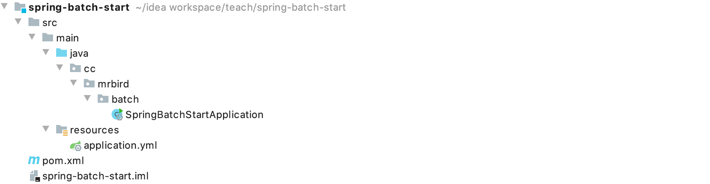
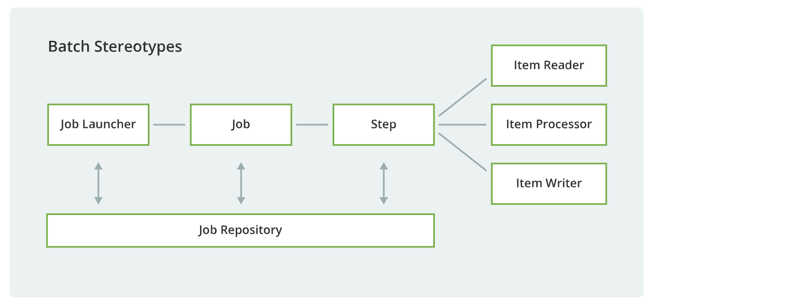
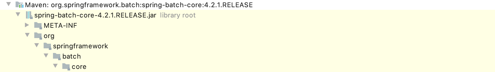
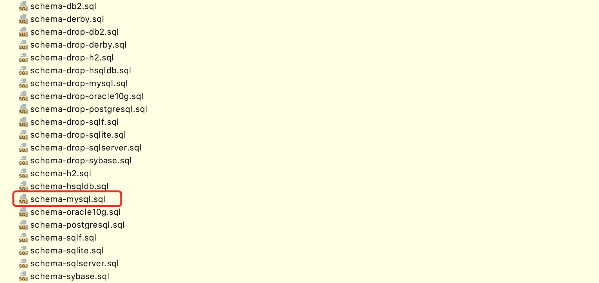
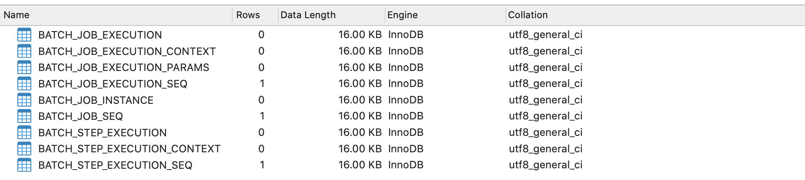

企业中经常会有需要批处理才能完成的业务操作，比如：自动化地处理大批量复杂的数据，如月结计算；重复性地处理大批量数据，如费率计算；充当内部系统和外部系统的数据纽带，中间需要对数据进行格式化，校验，转换处理等。
Spring Batch是一个轻量级但功能又十分全面的批处理框架，本节我们将通过一些简单的例子来入门Spring Batch。
框架搭建
新建一个Spring Boot项目，版本为2.2.4.RELEASE，artifactId为spring-batch-start，项目结构如下图所示：

然后在pom中引入Spring Batch、MySQL和JDBC依赖，引入后pom内容如下所示：
1 |
|
在编写代码之前，我们先来简单了解下Spring Batch的组成：

Spring Batch里最基本的单元就是任务Job，一个Job由若干个步骤Step组成。任务启动器Job Launcher负责运行Job，任务存储仓库Job Repository存储着Job的执行状态，参数和日志等信息。Job处理任务又可以分为三大类：数据读取Item Reader、数据中间处理Item Processor和数据输出Item Writer。
任务存储仓库可以是关系型数据库MySQL，非关系型数据库MongoDB或者直接存储在内存中，本篇使用的是MySQL作为任务存储仓库。
新建一个名称为springbatch的MySQL数据库，然后导入org.springframework.batch.core目录下的schema-mysql.sql文件：
 
导入后，库表如下图所示：

然后在项目的配置文件application.yml里添加MySQL相关配置：
1 | spring: |
接着在Spring Boot的入口类上添加@EnableBatchProcessing注解，表示开启Spring Batch批处理功能：
1 |
|
至此，基本框架搭建好了，下面开始配置一个简单的任务。
编写第一个任务
在cc.mrbird.batch目录下新建job包，然后在该包下新建一个FirstJobDemo类，代码如下所示：
1 |
|
上面代码中，我们注入了JobBuilderFactory任务创建工厂和StepBuilderFactory步骤创建工厂，分别用于创建任务Job和步骤Step。JobBuilderFactory的get方法用于创建一个指定名称的任务，start方法指定任务的开始步骤，步骤通过StepBuilderFactory构建。
步骤Step由若干个小任务Tasklet组成，所以我们通过tasklet方法创建。tasklet方法接收一个Tasklet类型参数，Tasklet是一个函数是接口，源码如下：
1 | public interface Tasklet { |
所以我们可以使用lambda表达式创建一个匿名实现：
1 | (contribution, chunkContext) -> { |
该匿名实现必须返回一个明确的执行状态，这里返回RepeatStatus.FINISHED表示该小任务执行成功，正常结束。
此外，需要注意的是，我们配置的任务Job必须注册到Spring IOC容器中，并且任务的名称和步骤的名称组成唯一。比如上面的例子，我们的任务名称为firstJob，步骤的名称为step，如果存在别的任务和步骤组合也叫这个名称的话，则会执行失败。
启动项目，控制台打印日志如下：
1 | ... |
可以看到，任务成功执行了，数据库的库表也将记录相关运行日志。
多步骤任务
一个复杂的任务一般包含多个步骤，下面举个多步骤任务的例子。在job包下新建MultiStepJobDemo类：
1 |
|
上面代码中，我们通过step1()、step2()和step3()三个方法创建了三个步骤。Job里要使用这些步骤，只需要通过JobBuilderFactory的start方法指定第一个步骤，然后通过next方法不断地指定下一个步骤即可。
启动项目，控制台打印日志如下：
1 | 2020-03-06 13:52:52.188 INFO 18472 --- [ main] o.s.b.c.l.support.SimpleJobLauncher : Job: [SimpleJob: [name=multiStepJob]] launched with the following parameters: [{}] |
三个步骤依次执行成功。
多个步骤在执行过程中也可以通过上一个步骤的执行状态来决定是否执行下一个步骤，修改上面的代码：
1 |
|
multiStepJob()方法的含义是：multiStepJob2任务先执行step1，当step1状态为完成时，接着执行step2，当step2的状态为完成时，接着执行step3。ExitStatus.COMPLETED常量表示任务顺利执行完毕，正常退出，该类还包含以下几种退出状态：
1 | public class ExitStatus implements Serializable, Comparable<ExitStatus> { |
启动项目，控制台日志打印如下：
1 | 2020-03-06 14:21:49.384 INFO 18745 --- [ main] o.s.b.c.l.support.SimpleJobLauncher : Job: [FlowJob: [name=multiStepJob2]] launched with the following parameters: [{}] |
Flow的用法
Flow的作用就是可以将多个步骤Step组合在一起然后再组装到任务Job中。举个Flow的例子，在job包下新建FlowJobDemo类：
1 |
|
上面代码中，我们通过FlowBuilder将step1和step2组合在一起，创建了一个名为flow的Flow，然后再将其赋给任务Job。使用Flow和Step构建Job的区别是，Job流程中包含Flow类型的时候需要在build()方法前调用end()方法。
启动程序，控制台日志打印如下：
1 | 2020-03-06 14:36:42.621 INFO 18865 --- [ main] o.s.b.c.l.support.SimpleJobLauncher : Job: [FlowJob: [name=flowJob]] launched with the following parameters: [{}] |
并行执行
任务中的步骤除了可以串行执行（一个接着一个执行）外，还可以并行执行，并行执行在特定的业务需求下可以提供任务执行效率。
将任务并行化只需两个简单步骤：
- 将步骤Step转换为Flow；
- 任务Job中指定并行Flow。
举个例子，在job包下新建SplitJobDemo类：
1 |
|
上面例子中，我们创建了两个Flow：flow1（包含step1和step2）和flow2（包含step3）。然后通过JobBuilderFactory的split方法，指定一个异步执行器，将flow1和flow2异步执行（也就是并行）。
启动项目，控制台日志打印如下：
1 | 2020-03-06 15:25:43.602 INFO 19449 --- [ main] o.s.b.c.l.support.SimpleJobLauncher : Job: [FlowJob: [name=splitJob]] launched with the following parameters: [{}] |
可以看到step3并没有在step2后才执行，说明步骤已经是并行化的（开启并行化后，并行的步骤执行顺序并不能100%确定，因为线程调度具有不确定性）。
任务决策器
决策器的作用就是可以指定程序在不同的情况下运行不同的任务流程，比如今天是周末，则让任务执行step1和step2，如果是工作日，则之心step1和step3。
使用决策器前，我们需要自定义一个决策器的实现。在cc.mrbird.batch包下新建decider包，然后创建MyDecider类，实现JobExecutionDecider接口：
1 |
|
MyDecider实现JobExecutionDecider接口的decide方法，该方法返回FlowExecutionStatus。上面的逻辑是：判断今天是否是周末，如果是，返回FlowExecutionStatus("weekend")状态，否则返回FlowExecutionStatus("workingDay")状态。
下面演示如何在任务Job里使用决策器。在job包下新建DeciderJobDemo：
1 |
|
上面代码中，我们注入了自定义决策器MyDecider，然后在jobDecider()方法里使用了该决策器：
1 |
|
这段代码的含义是：任务deciderJob首先执行step1，然后指定自定义决策器，如果决策器返回weekend，那么执行step2，如果决策器返回workingDay，那么执行step3。如果执行了step3，那么无论step3的结果是什么，都将执行step4。
启动项目，控制台输出如下所示：
1 | 2020-03-06 16:09:10.541 INFO 19873 --- [ main] o.s.b.c.l.support.SimpleJobLauncher : Job: [FlowJob: [name=deciderJob]] launched with the following parameters: [{}] |
因为今天是2020年03月06日星期五，是工作日，所以任务执行了step1、step3和step4。
任务嵌套
任务Job除了可以由Step或者Flow构成外，我们还可以将多个任务Job转换为特殊的Step，然后再赋给另一个任务Job，这就是任务的嵌套。
举个例子，在job包下新建NestedJobDemo类：
1 |
|
上面代码中，我们通过childJobOne()和childJobTwo()方法创建了两个任务Job，这里没什么好说的，前面都介绍过。关键在于childJobOneStep()方法和childJobTwoStep()方法。在childJobOneStep()方法中，我们通过JobStepBuilder构建了一个名称为childJobOneStep的Step，顾名思义，它是一个任务型Step的构造工厂，可以将任务转换为“特殊”的步骤。在构建过程中，我们还需要传入任务执行器JobLauncher、任务仓库JobRepository和事务管理器PlatformTransactionManager。
将任务转换为特殊的步骤后，将其赋给父任务parentJob即可，流程和前面介绍的一致。
配置好后，启动项目，控制台输出如下所示：
1 | 2020-03-06 16:58:39.771 INFO 21588 --- [ main] o.s.b.c.l.support.SimpleJobLauncher : Job: [SimpleJob: [name=parentJob]] launched with the following parameters: [{}] |
本节源码链接：https://github.com/wuyouzhuguli/SpringAll/tree/master/67.spring-batch-start。